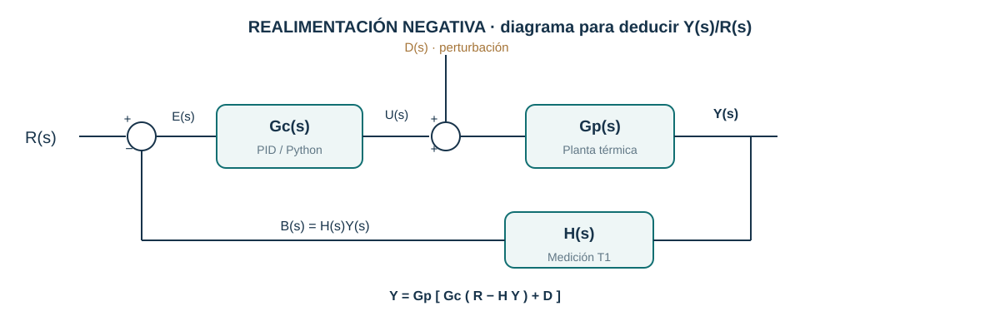
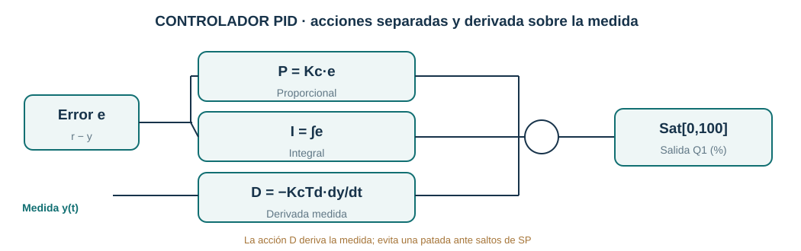

Semana 13 · Fundamentos de control automático y TCLab
Interpretar el lazo de control y experimentar con Q1 y T1. Teoría, ecuaciones explicadas, ejercicios guiados y experimentación con Python/TCLab.
2 sesiones · 120 min cada unaTCLab · PythonEvidencia experimental
1. Propósito, resultados de aprendizaje y actividades
Clase 1 · 120 min
Repaso de control
Tipos de lazos; sensor, actuador y controlador; sistemas continuos y discretos. Fundamentos de P, PI y PID analógico frente a digital.
Clase 2 · 120 min
TCLab: primer experimento
Instalación, diagrama de bloques, control manual y escalón de Q1 con T1; registro CSV y observación de la dinámica.
Logro: interpretar qué se controla, con qué se mide, qué actúa y por qué se requiere realimentación.
Al finalizar: explicar cada señal del diagrama a bloques; obtener una transferencia a partir de un modelo diferencial; deducir la transferencia de lazo cerrado para realimentación negativa; explicar el PID continuo y escribir una actualización digital PI con unidades; ejecutar un experimento de lazo abierto con TCLab.
2. Introducción rigurosa al control automático
Un sistema de control modifica una entrada física para que una variable de proceso cumpla un objetivo. En TCLab, la variable controlada es la temperatura T1, la variable manipulada es la potencia porcentual del calentador Q1, y el segundo calentador Q2 permite introducir una perturbación térmica. El sensor proporciona una temperatura que puede contener ruido y retardo; el controlador interpreta esa medición, calcula el error y decide el nuevo mando.
2.1 Variables, unidades y dos estructuras de control
Símbolo
Significado
Aplicación TCLab
r(t) o SP
Referencia que se pretende alcanzar
Temperatura solicitada, °C
y(t)
Salida medida del sistema
T1 medida, °C
e(t)
Error de regulación
Referencia menos temperatura, °C
u(t)
Acción de control
Q1, de 0 a 100 %
d(t)
Perturbación externa o de carga
Calor añadido por Q2 / cambio de ambiente
Gc(s)
Función de transferencia del controlador
Algoritmo P, PI o PID en aproximación continua
Gp(s)
Función de transferencia de la planta
Modelo dinámico de Q1 a T1
H(s)
Dinámica de medición en la realimentación
Sensor y acondicionamiento (ideal: H=1)
Lazo abierto: se fija Q1 sin utilizar T1 para corregir errores. Es útil para identificar la planta, pero no rechaza de manera automática las perturbaciones. Lazo cerrado: la medición se compara con la referencia en cada ciclo y el mando Q1 se recalcula. El signo negativo del sumador es fundamental: cuando T1 supera SP, el error disminuye y el sistema reduce el aporte de calor.
Error y realimentación en el dominio de Laplace
Para realimentación unitaria, la medición y la salida se representan en las mismas unidades: b(t)=y(t). Para H(s) no unitario, conviene distinguir b(t) de y(t) y expresar la comparación en las unidades correspondientes.

Diagrama de bloques con referencia, comparador, controlador, perturbación a la entrada de la planta y medición realimentada.
2.2 Qué representa una función de transferencia
La transformada unilateral de Laplace es una herramienta para transformar ecuaciones diferenciales lineales en ecuaciones algebraicas. Se define para una señal causal f(t) por la integral siguiente:
Transformada de Laplace; s es una variable compleja, unidad s⁻¹
La propiedad esencial es ℒ{df/dt}=sF(s)−f(0⁻). Al definir una función de transferencia, se consideran condiciones iniciales nulas para las variables de desviación; por eso el término de condición inicial desaparece. Esto no significa que la placa física comience a 0 °C: significa que trabajamos respecto a un punto de equilibrio.
Definición de función de transferencia para un sistema LTI
En control térmico, Gp(s) describe la relación entre una pequeña variación de Q1 y la variación resultante de T1 cerca de un punto operativo. Las funciones de transferencia suponen un sistema lineal e invariante en el tiempo en el intervalo de estudio; la planta real es aproximadamente lineal solo en una región de operación.
2.3 De una ecuación diferencial al modelo dinámico
Supongamos que una planta térmica se aproxima por un modelo lineal de primer orden, en variables de desviación x(t)=T(t)−Teq y v(t)=Q1(t)−Q1eq:
Modelo temporal; τ [s], Kp [°C/%]
Aplicando Laplace con x(0)=0 y reagrupando:
Derivación del modelo de primer orden
El polo se obtiene igualando a cero el denominador, sp=−1/τ. Para τ>0, el polo está en el semiplano izquierdo y la respuesta libre decae exponencialmente. La ganancia estática se obtiene de Gp(0)=Kp. La Semana 14 deducirá Kp y τ desde un balance de energía.
Respuesta de primer orden a un escalón Δu, partiendo de desviación cero
A los t=τ segundos, la salida completa el 63.2 % del cambio final; a los 3τ, cerca del 95.0 %. El modelo también permite describir el compromiso entre rapidez y ganancia sin confundir estabilidad, velocidad y precisión.
2.4 Álgebra de bloques y realimentación negativa
Para el diagrama anterior, se escriben las ecuaciones de cada bloque, tomando una perturbación D(s) que se suma antes de la planta:
Ecuación del sumador con retroacción negativa
Salida del controlador
Salida de la planta con perturbación de entrada
Sustituimos la ecuación del controlador en la de la planta y luego sustituimos la del error:
Sustitución; se omite (s) solo para aligerar la escritura
Agrupación de términos que contienen Y
Dividiendo y estudiando una entrada a la vez (principio de superposición):
Transferencia referencia → salida; D=0
Transferencia perturbación de entrada → salida; R=0
Transferencia referencia → error, D=0
La ganancia de lazo es L(s)=Gc(s)Gp(s)H(s). Se definen la sensibilidad S(s)=1/[1+L(s)] y la sensibilidad complementaria T(s)=L(s)/[1+L(s)]. Importante: para H(s)≠1, T(s) describe la transferencia R→B=HY, no necesariamente R→Y.
Identidad básica de sensibilidad del lazo
Una gran ganancia de lazo a bajas frecuencias suele reducir el error y el efecto de perturbaciones lentas, pero puede reducir márgenes de estabilidad y agravar la sensibilidad a ruido de medición o retrasos. No se debe interpretar que una ganancia de controlador mayor siempre produce mejor control.
3. Controlador continuo y algoritmo digital: de la ecuación al programa
3.1 Control continuo: P, I y D
En la realización analógica, combinaciones de resistencias, capacitores y amplificadores operacionales pueden implementar integración y derivación de señales eléctricas continuas. En el TCLab del curso, el PID se calcula en Python sobre muestras obtenidas por USB; por lo tanto, el controlador es digital, aunque el calentamiento físico evoluciona continuamente.
PID continuo ideal, forma dependiente o ISA
Parámetro
Significado y unidades con u en % y e en °C
Efecto principal
ub
Mando de equilibrio o sesgo, %
Puede compensar calefacción necesaria para el punto operativo
Kc
Ganancia proporcional, %/°C
Mayor reacción instantánea al error; puede producir oscilaciones
Ti
Tiempo integral, segundos
Más pequeño → integral más intensa, mayor riesgo de saturación
Td
Tiempo derivativo, segundos
Anticipa variaciones; sensible a ruido y cambios bruscos de referencia
Ki=Kc/Ti
%/(°C·s)
Ganancia integral en forma paralela
Kd=KcTd
%·s/°C
Ganancia derivativa en forma paralela
PID ideal en Laplace, sin sesgo ni saturación
Una derivada aplicada al error reacciona violentamente a un salto de SP (*derivative kick*). Por ello implementaremos la derivada sobre la temperatura medida: D(t)=−KcTddy/dt, suavizada con un filtro de primer orden. El efecto de la referencia entra en las acciones P e I, no directamente en el término D.

Estructura de cálculo P, I y D: la derivada se toma sobre la medida y se suma con signo negativo.
3.2 Muestreo, retención y control por computadora
Definimos instantes tk=kTs, donde Ts es el periodo de muestreo en segundos, no la frecuencia. La frecuencia de muestreo es fs=1/Ts. En cada ciclo se leen sensores, se calcula el control y se mantiene el mando constante hasta el siguiente ciclo (retención de orden cero). El tiempo de cálculo, los retardos USB, la cuantización y el jitter forman parte del sistema real.
Muestreo uniforme ideal
3.3 Ecuación del PI discreto desde su integral
La integral continua se aproxima mediante áreas rectangulares de base Ts. En la aproximación rectangular hacia atrás, se usa el error actual e[k]:
Suma discreta del área bajo el error
Actualización recurrente del término integral
PI en forma posicional con saturación
La actualización de la integral tiene unidades de porcentaje: (%/°C) × s/s × °C = %. Si Ti→∞ se elimina la acción integral; si Ti disminuye demasiado, la integral acumula error con mayor rapidez y puede causar oscilaciones.
3.4 Derivada discreta y filtrado
Diferencia hacia atrás sobre medición, sin filtro
El término anterior amplifica variaciones rápidas del sensor. Con un tiempo de filtro Tf>0, usamos la recursión exponencial siguiente (filtro pasabajas de primer orden sobre la derivada):
Derivada filtrada por Euler hacia atrás
Contribución derivativa filtrada
3.5 Saturación, windup y modo seguro
El calentador TCLab no puede aplicar potencia negativa ni más del 100 %. Definimos uraw como la acción solicitada por el controlador y u como la aplicada. Si la integral sigue acumulándose mientras el control está saturado, se produce integral windup. En nuestro programa aplicamos integración condicional: se detiene el incremento de la integral cuando la saturación y el signo del error harían crecer todavía más dicha saturación.
Límites físicos y operación saturada
En el laboratorio, el apagado de seguridad es independiente del cálculo PID: al detener, desconectar o detectar sobretemperatura, la aplicación intentará fijar Q1=Q2=0%. Se debe disponer además de la desconexión física de la alimentación, pues un programa no sustituye a la supervisión del operador.
Interpretación de ingeniería. No confundir «PID analógico» con «planta analógica». En TCLab la planta térmica es física y continua, mientras que el algoritmo propuesto se ejecuta digitalmente en Python. El PID embebido en firmware constituye un desarrollo distinto.
4. Laboratorio inicial y simulación
Realizaremos una prueba escalón para distinguir el esfuerzo de control de la temperatura medida. En la simulación puede cambiar el nivel de Q1 y observar la respuesta sin hardware.
Instale Python, conecte el TCLab a USB y alimentación adecuada; ejecute el ejemplo de lectura lab.T1 de la documentación. Si todavía no dispone de placa, use simulación.
Establezca Q1 = 0 %. Espere una temperatura inicial razonablemente estable y registre T1 y T2.
Aplique un escalón controlado en Q1, por ejemplo 40 %, y registre cada 2 s durante un intervalo suficiente para observar la tendencia.
Apague Q1 y Q2; analice la temperatura máxima, el retardo y la forma de la curva.
Exporte CSV, identifique condiciones de ensayo y compare gráfico y observación de laboratorio.
Fuente: modelo FOPDT didáctico. No representa mediciones reales del TCLab.
5. Problemas resueltos y ejercicios guiados
Problema 13.1 · Reducir el diagrama de bloques sin memorizar la fórmula
Escriba el sumador E=R−HY y el controlador U=GcE. Indique las unidades de cada señal.
Agregue una perturbación a la entrada de la planta: Y=Gp(U+D). No la sitúe después de la planta.
Sustituya y agrupe todos los términos de Y en un mismo miembro. Solo entonces divida por R manteniendo D=0.
Compruebe el signo «+» en el denominador de realimentación negativa y discuta qué ocurriría con el signo contrario.
Resultado de comprobación; la perturbación se suma antes de Gp
Problema 13.2 · Modelo de primer orden con regulador proporcional
Sea Gp(s)=2/(10s+1), Gc(s)=3 y H(s)=1. Sustituya en la fórmula obtenida.
Ganancia estática 0.857; con solo P queda error permanente
La constante de tiempo del lazo cerrado es τCL=10/7≈1.43 s. Para un escalón unitario, la salida tiende a 6/7, por lo que queda error de 1/7. Este ejemplo lineal ilustra que un controlador proporcional no garantiza error estacionario nulo.
Problema 13.3 · Primer cálculo digital PI, completamente reproducible
Para r=40 °C, y=35 °C, Kc=1.5 %/°C, Ts=2 s, Ti=30 s, I[k−1]=4% y ub=15%, calcule:
Error y acción proporcional
Acción PI en 27 %, sin saturación
Verifique las dimensiones del incremento integral y explique por qué cambiar Ts sin recalcular la actualización modificaría la velocidad efectiva de la integral.
Problemas que el estudiante debe resolver
Para Gp(s)=5/(12s+1) y Gc(s)=Kc, derive la función del lazo cerrado con H=1. Obtenga el polo y la ganancia estática para Kc=2.
Dibuje un diagrama con perturbación a la salida de la planta y explique por qué Y/D cambia respecto al diagrama mostrado.
Explique la diferencia entre «temperatura real», «temperatura medida» y «señal de realimentación» si el sensor tiene retardo.
Con Kc=1.2 %/°C, Ti=40 s y Ts=2 s, calcule cinco actualizaciones de I cuando el error permanece en 3 °C.
Con Kc=2 %/°C, Td=8 s, Ts=2 s y T1 de 32 a 32.4 °C, calcule D sin filtro y explique su signo.
Discuta por qué un PI con saturación puede recuperarse lentamente de una consigna imposible.
Identifique tres fuentes de retardo entre leer T1 y modificar Q1 usando Python y USB.
Elabore una tabla con variables y unidades para la instalación real del TCLab; fotografíe el sistema y documente qué ecuaciones son modelos y cuáles son mediciones.
6. Materiales y recursos
Guía académica de la Semana 13
Documento de estudio y procedimiento experimental con objetivos, ecuaciones, problemas resueltos y actividades propuestas.
El control digital con TCLab estándar se ejecuta en Python por USB. La validación experimental y la compatibilidad real del equipo deben comprobarse presencialmente.
7. Evaluación formativa y tutor de IA
Responda las preguntas y después justifique cada selección con ecuaciones o evidencias experimentales.
1. ¿Qué parámetro describe la rapidez fundamental de una planta térmica de primer orden?
2. ¿Cuál es el efecto más directo del término integral?
3. ¿Qué representa el archivo CSV creado en modo simulación?
Tutor de IA · preguntas orientadoras
Actúe como tutor socrático de Ingeniería de Control para la Unidad III del curso INTERFAZ-IA, Semana 13. Ayúdeme a explicar la teoría matemática antes de contestar ejercicios; compruebe unidades y signos; exija justificar las ecuaciones, los modelos, el muestreo, el anti-windup y los resultados del TCLab. Pregunte una cosa por vez, sin inventar datos experimentales ni entregar directamente el resultado final.